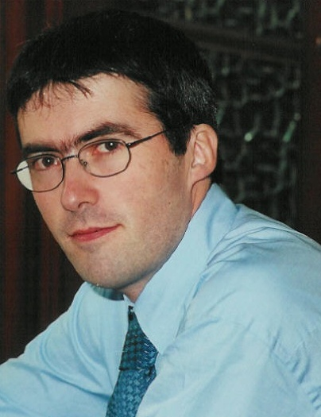

Vincent Rijmen (Lovaina, 16 de octubre de 1970) es un criptógrafo diseñador de Rijndael, el Advanced Encryption Standard. Rijmen es co-diseñador de la función de hash WHIRLPOOL y de los algoritmos de cifrado por bloques Anubis, KHAZAD, Square, NOEKEON y SHARK Rijmen nació en Lovaina, cerca de Bruselas (Bélgica). En 1993 obtuvo la licenciatura en ingeniería electrónica en la Katholieke Universiteit Leuven. Posteriormente, estudió su doctorado en el laboratorio de ESAT/COSIC de la misma universidad (COSIC significa seguridad en ordenadores y criptografía industrial). En 1997, Rijmen finalizó su trabajo de doctorado, titulado "Criptoanálisis y diseño de cifradores de bloques iterados". Después de su doctorado trabajó en el laboratorio COSIC, colaborando en muchas ocasiones con Joan Daemen. Uno de sus proyectos comunes resultó en el algoritmo Rijndael, que en octubre de 2000 fue seleccionado por el NIST para convertirse en el Advanced Encryption Standard. Desde el 1 de agosto de 2001, Rijmen ha estado trabajando como criptógrafo jefe para Cryptomathic. Entre 2001 y 2003, Rijmen fue profesor visitante en la Graz University of Technology (Austria), llegando a ser profesor a tiempo completo a partir de 2004.
 Referencia de info